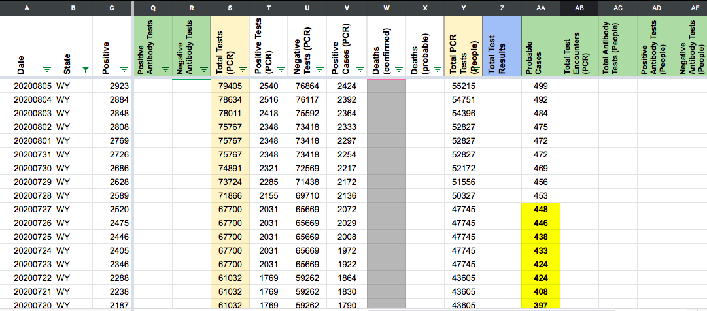
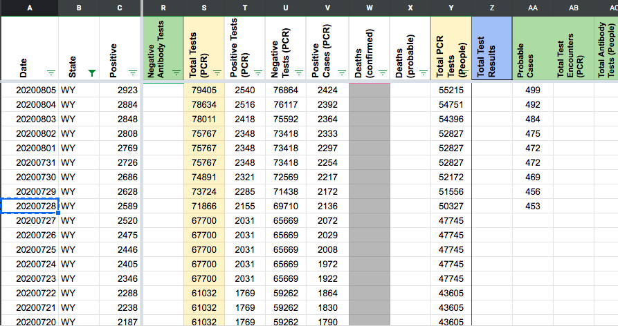

[WY] Probables Backfill
State: WY
Dates impacted: 4/29 - 7/27
Issue description: We started reporting probable cases on 7/28. The states probables can be calculated from total cases - confirmed cases. We can backfill these values back to 4/29.
Source: https://health.wyo.gov/publichealth/infectious-disease-epidemiology-unit/disease/novel-coronavirus/
AFTER: 
This issue has been automatically marked as stale because it has not had recent activity. It will be closed if no further activity occurs. Thank you for your contributions!
This issue has been closed because it was stale for 15 days, and there was no further activity on it for 10 days. You can feel free to re-open it if the issue is important, and label it as “not stale.”
We found some discrepancies in Positive Cases (PCR) and Probables. We also found Probables that were not filled out prior to May. The plan is as follows:
-
Backfill Positive Cases (PCR) for all dates 4/8 - 5/13 due to being a day off or having some small discrepancies.
-
Fix Positives Cases (PCR) for 5/16, 5/18, 5/19, 5/21, 5/24, 5/25 due to discrepancies and duplicates.
-
Backfill probables from 4/8 - 4/30 for dates we did not collect.
-
Fix probables for 5/1 - 5/4, 5/8, 5/9, 5/11, 5/13, 5/16, 5/18, 5/19, 5/21, 5/24, 5/25, 5/27, 6/2, 6/15, 6/24, 7/6, 7/13
-
Fix prob+confirm for entire time series due to being off by a day and not having probables.
This issue has been automatically marked as stale because it has not had recent activity. It will be closed if no further activity occurs. Thank you for your contributions!
This issue has been closed because it was stale for 15 days, and there was no further activity on it for 10 days. You can feel free to re-open it if the issue is important, and label it as “not stale.”
BEFORE: 